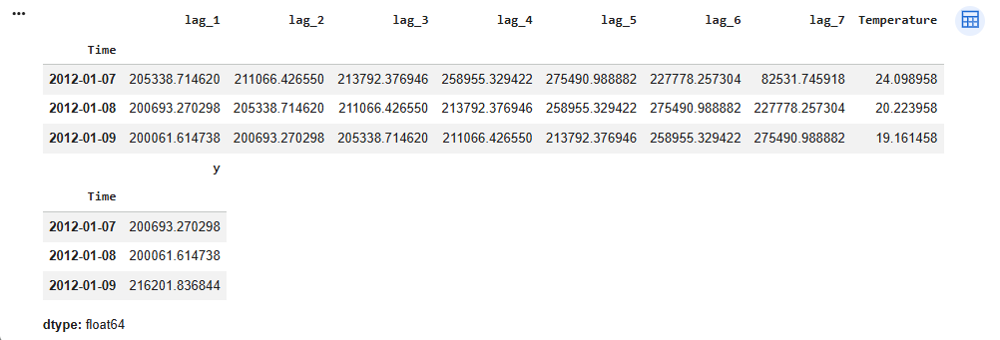
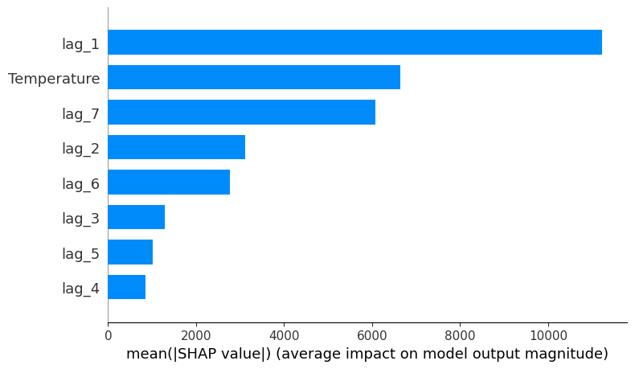
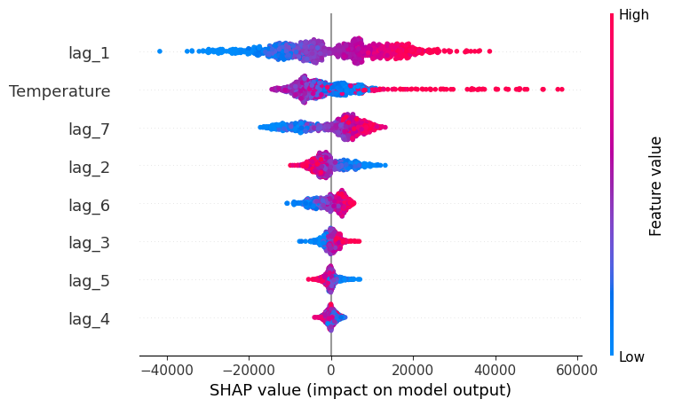
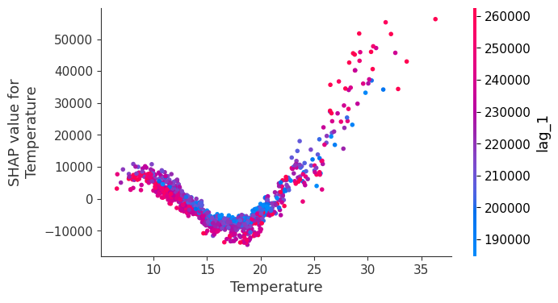
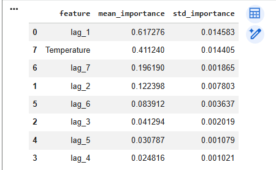
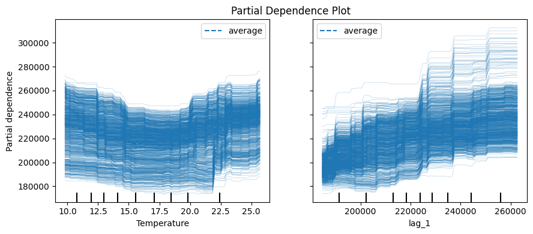

Analisis Data#
1. Prediksi yang Dilakukan Mengenai Apa?#
Analisis ini berfokus pada peramalan (forecasting) terhadap kebutuhan listrik (Demand) di wilayah Victoria, Australia. Proses prediksi memanfaatkan pendekatan time series forecasting dengan menggunakan data historis konsumsi listrik serta informasi suhu (Temperature) sebagai variabel pendukung (exogenous variable).
Model yang diterapkan adalah LightGBM Regressor (LGBMRegressor) yang dibangun menggunakan ForecasterRecursive dari library Skforecast.
2. Seperti Apa Bentuk Data Training (Input dan Output)?#
Input (X)#
Fitur yang digunakan sebagai data masukan terdiri atas:
lag_1: nilai Demand pada 1 hari sebelumnyalag_2: nilai Demand pada 2 hari sebelumnyalag_3: nilai Demand pada 3 hari sebelumnyalag_4: nilai Demand pada 4 hari sebelumnyalag_5: nilai Demand pada 5 hari sebelumnyalag_6: nilai Demand pada 6 hari sebelumnyalag_7: nilai Demand pada 7 hari sebelumnyaTemperature: suhu rata-rata harian
Output (y)#
Variabel target yang diprediksi adalah:
Demandpada periode berikutnya.
Dengan konfigurasi tersebut, model mempelajari keterkaitan antara riwayat konsumsi listrik beberapa hari sebelumnya beserta suhu lingkungan untuk memperkirakan kebutuhan listrik pada hari yang akan datang.

3. Apa yang Dimaksud dengan Lag?#
Dalam analisis deret waktu (time series), lag merupakan nilai suatu variabel pada periode-periode sebelumnya yang digunakan sebagai fitur prediksi.
Sebagai contoh:
lag_1merepresentasikan nilai Demand satu hari sebelumnya.lag_2merepresentasikan nilai Demand dua hari sebelumnya.lag_7merepresentasikan nilai Demand tujuh hari sebelumnya.
Pemanfaatan fitur lag memungkinkan model mengenali pola historis dan hubungan antarwaktu (temporal relationship) yang terdapat pada data.
4. Bagaimana Tahapan Analisis yang Dilakukan?#
Langkah-langkah analisis yang diterapkan dalam studi ini meliputi:
Mengambil dataset vic_electricity yang memuat informasi permintaan listrik dan suhu di Victoria, Australia.
Melakukan proses agregasi data sehingga memiliki frekuensi harian (daily frequency).
Membagi dataset menjadi data pelatihan (training set) dan data pengujian (testing set).
Membentuk fitur lag sebanyak tujuh periode, yaitu
lag_1hinggalag_7.Menambahkan variabel suhu (Temperature) sebagai variabel eksternal yang mendukung proses prediksi.
Melatih model menggunakan LGBMRegressor melalui pendekatan ForecasterRecursive.
Mengukur Feature Importance untuk mengetahui fitur yang memberikan kontribusi terbesar terhadap model.

Melakukan interpretasi model menggunakan SHAP (SHapley Additive exPlanations) guna memahami pengaruh masing-masing fitur terhadap hasil prediksi.

Menampilkan SHAP Dependence Plot untuk menganalisis hubungan antara nilai fitur dengan kontribusinya terhadap prediksi.

Menggunakan Permutation Importance sebagai pendekatan tambahan dalam mengevaluasi tingkat kepentingan setiap fitur.

Membuat Partial Dependence Plot (PDP) untuk mengamati perubahan hasil prediksi ketika suatu fitur mengalami perubahan nilai.

Menghasilkan prediksi kebutuhan listrik untuk beberapa periode mendatang.
Hasil Analisis#
Dari evaluasi menggunakan Feature Importance, Permutation Importance, dan SHAP Analysis, diperoleh beberapa temuan utama sebagai berikut:
Fitur lag_1 menjadi variabel yang paling dominan dalam memengaruhi hasil prediksi.
Variabel Temperature menempati urutan berikutnya sebagai faktor penting yang berkontribusi terhadap prediksi kebutuhan listrik.
Fitur lag_7 juga menunjukkan pengaruh yang cukup besar terhadap performa model.
Nilai permintaan listrik pada hari sebelumnya cenderung memiliki hubungan positif dengan nilai prediksi pada hari berikutnya.
Pengaruh suhu terhadap permintaan listrik tidak bersifat linier, sebagaimana terlihat pada visualisasi SHAP Dependence Plot dan Partial Dependence Plot.
Model mampu menggabungkan informasi historis dan faktor lingkungan untuk menghasilkan prediksi yang lebih baik.
Kesimpulan#
Model time series forecasting yang dikembangkan menggunakan LGBMRegressor dan ForecasterRecursive mampu melakukan prediksi kebutuhan listrik dengan memanfaatkan data historis serta variabel suhu. Hasil interpretasi menunjukkan bahwa fitur berbasis riwayat permintaan listrik (lag features) menjadi faktor yang paling menentukan dalam proses prediksi. Selain itu, suhu berfungsi sebagai variabel eksternal yang turut memberikan pengaruh penting terhadap akurasi model dalam memperkirakan kebutuhan listrik di masa mendatang.